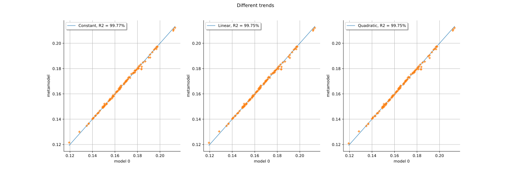

Note
Go to the end to download the full example code.
Gaussian Process Regression: choose a polynomial trend on the beam model¶
In this example, we consider the cantilever beam and we build a metamodel using a Gaussian process regression (refer to Gaussian process regression) whose trend is estimated on the given data set. We illustrate the impact of the choice of the trend function basis on the metamodel. This example focuses on three polynomial trends:
In the Gaussian Process Regression: choose a polynomial trend example, we give another example of this procedure.
from openturns.usecases import cantilever_beam
import openturns as ot
import openturns.viewer as otv
Definition of the model¶
We load the use case.
cb = cantilever_beam.CantileverBeam()
We define the function which evaluates the output depending on the inputs.
model = cb.model
Then we define the distribution of the input random vector.
dimension = cb.dim # number of inputs
input_dist = cb.distribution
Create the design of experiments¶
We consider a simple Monte-Carlo sampling as a design of experiments.
This is why we generate an input sample using the getSample() method of the distribution.
Then we evaluate the output using the model function.
sampleSize_train = 20
X_train = input_dist.getSample(sampleSize_train)
Y_train = model(X_train)
Constant basis¶
In this paragraph we choose a basis constant for the estimation of the trend.
The basis is built with the ConstantBasisFactory class.
basis = ot.ConstantBasisFactory(dimension).build()
In order to create the Gaussian Process Regression metamodel, we use a squared exponential covariance kernel.
The SquaredExponential kernel has one magnitude coefficient and 4 scale coefficients.
This is because this covariance kernel is anisotropic : each of the 4 input variables is associated with its own
scale coefficient. We need to set the initial scale parameter for the optimization.
covariance_model = ot.SquaredExponential(dimension)
To create the Gaussian Process Regression metamodel, we first build the ![Y(\omega, x)]() Gaussian process with the class
Gaussian process with the class
GaussianProcessFitter. It requires a training sample, a covariance kernel and a
trend basis as input arguments.
algo_fit = ot.GaussianProcessFitter(X_train, Y_train, covariance_model, basis)
algo_fit.run()
fit_result = algo_fit.getResult()
Then, we condition the process to the data set with the class
GaussianProcessRegression.
algo_gpr = ot.GaussianProcessRegression(fit_result)
algo_gpr.run()
Get the Gaussian Process Regression metamodel.
gpr_result_cst = algo_gpr.getResult()
metamodel_cst = gpr_result_cst.getMetaModel()
The getTrendCoefficients() method returns the coefficients of the trend.
The constant trend always has only one coefficient (if there is one single output).
print(gpr_result_cst.getTrendCoefficients())
[0.175118]
We can check the estimated covariance model.
print(gpr_result_cst.getCovarianceModel())
SquaredExponential(scale=[1.39249e+10,149.298,0.17976,4.88951e-08], amplitude=[0.0397017])
Linear basis¶
In this paragraph we choose a linear basis for the estimation of the trend.
The basis is built with the LinearBasisFactory class. The same methodology is followed:
we do not detail it.
basis = ot.LinearBasisFactory(dimension).build()
algo_fit = ot.GaussianProcessFitter(X_train, Y_train, covariance_model, basis)
algo_fit.run()
fit_result = algo_fit.getResult()
algo_gpr = ot.GaussianProcessRegression(fit_result)
algo_gpr.run()
gpr_result_lin = algo_gpr.getResult()
metamodel_lin = gpr_result_lin.getMetaModel()
print(gpr_result_lin.getTrendCoefficients())
print(gpr_result_lin.getCovarianceModel())
[3.59071e-23,2.48955e-12,1.0692e-20,9.137e-23,5.19996e-30]
SquaredExponential(scale=[1.39249e+10,156.297,0.17976,4.88951e-08], amplitude=[0.049174])
The number of coefficients in the linear and quadratic trends depends on the number of inputs, which is equal to
![dim = 4]()
in the cantilever beam case.
We observe that the number of coefficients in the trend is 5, which corresponds to:
1 coefficient for the constant part,
dim = 4 coefficients for the linear part.
Quadratic basis¶
In this paragraph we choose a quadratic basis for the estimation of the trend.
The basis is built with the QuadraticBasisFactory class. The same methodology is followed:
we do not detail it.
However we can see that the default optimization algorithm which is Cobyla does not manage to converge.
Thus, we can either:
change the default optimization algorithm and select for example the
TNCalgorithm (Truncated Newton Constrained) using the entry ofResourceMapcalled GaussianProcessFitter-DefaultOptimizationAlgorithm: ot.ResourceMap.SetAsString(“GaussianProcessFitter- DefaultOptimizationAlgorithm”, “TNC”),or keep the default optimization algorithm but change the default maximum constrainte error value which is equal to
![10^{-5}]() . We move it to
. We move it to ![10^{-6}]() using the entry of
using the entry of ResourceMapcalled OptimizationAlgorithm-DefaultMaximumConstraintError: ot.ResourceMap.SetAsScalar(“OptimizationAlgorithm -DefaultMaximumConstraintError”, 1e-6).
ot.ResourceMap.SetAsScalar("OptimizationAlgorithm-DefaultMaximumConstraintError", 1e-6)
basis = ot.QuadraticBasisFactory(dimension).build()
algo_fit = ot.GaussianProcessFitter(X_train, Y_train, covariance_model, basis)
algo_fit.run()
fit_result = algo_fit.getResult()
algo_gpr = ot.GaussianProcessRegression(fit_result)
algo_gpr.run()
gpr_result_quad = algo_gpr.getResult()
metamodel_quad = gpr_result_quad.getMetaModel()
print(gpr_result_quad.getTrendCoefficients())
print(gpr_result_quad.getCovarianceModel())
[6.51046e-45,4.62512e-34,1.9687e-42,1.65629e-44,9.45253e-52,3.32911e-23,1.39613e-31,6.60575e-40,1.17684e-33,5.01694e-42,4.22104e-44,6.72893e-41,2.86291e-49,2.40485e-51,1.4218e-58]#15
SquaredExponential(scale=[1.39249e+10,166.88,0.17976,4.88951e-08], amplitude=[0.0969573])
This time, the trend has 15 coefficients:
1 coefficient for the constant part,
4 coefficients for the linear part,
10 coefficients for the quadratic part.
This is because the number of coefficients in the quadratic part has
![\frac{dim \times (dim+1)}{2}=\frac{4\times 5}{2}=10]()
coefficients, associated with the symmetric matrix of the quadratic function.
Validate the metamodel¶
We finally want to validate the Gaussian Process Regression metamodel. This is why we generate a validation sample with size 100 and we evaluate the output of the model on this sample.
sampleSize_test = 100
X_test = input_dist.getSample(sampleSize_test)
Y_test = model(X_test)
We define a function to easily draw the QQ-plot graphs.
def drawMetaModelValidation(X_test, Y_test, metamodel_gpr, title):
metamodel_predictions = metamodel_gpr(X_test)
val = ot.MetaModelValidation(Y_test, metamodel_predictions)
r2Score = val.computeR2Score()[0]
graph = val.drawValidation().getGraph(0, 0)
graph.setLegends([""])
graph.setLegends(["%s, R2 = %.2f%%" % (title, 100 * r2Score), ""])
graph.setLegendPosition("upper left")
return graph
We plot here the validation graph for each metamodel.
grid = ot.GridLayout(1, 3)
grid.setTitle("Different trends")
graphConstant = drawMetaModelValidation(X_test, Y_test, metamodel_cst, "Constant")
graphLinear = drawMetaModelValidation(X_test, Y_test, metamodel_lin, "Linear")
graphQuadratic = drawMetaModelValidation(X_test, Y_test, metamodel_quad, "Quadratic")
grid.setGraph(0, 0, graphConstant)
grid.setGraph(0, 1, graphLinear)
grid.setGraph(0, 2, graphQuadratic)
view = otv.View(grid)

We observe that the three trends perform very well in this case. With more coefficients, the Gaussian Process Regression metamodel is more flexibile and can adjust better to the training sample. This does not mean, however, that the trend coefficients will provide a good fit for the validation sample.
The number of parameters in each Gaussian Process Regression metamodel is the following :
with the constant trend, we have 6 coefficients to estimate: 5 coefficients for the covariance matrix and 1 coefficient for the trend,
with the linear trend, we have 10 coefficients to estimate: 5 coefficients for the covariance matrix and 5 coefficients for the trend,
with the quadratic trend, we have 20 coefficients to estimate: 5 coefficients for the covariance matrix and 15 coefficients for the trend.
In the cantilever beam example, fitting the metamodel to a training sample with only 10 points is made much easier because the function to approximate is almost linear. In this case, a quadratic trend is not advisable because it can interpolate all points in the training sample.
Display figures
otv.View.ShowAll()